UHOne was attracting strong traffic but losing buyers at the post-Census product display. By capturing product intent at the top of the page and carrying it downstream, the program shipped 3 winners and $16.77M in projected annualized incremental value.
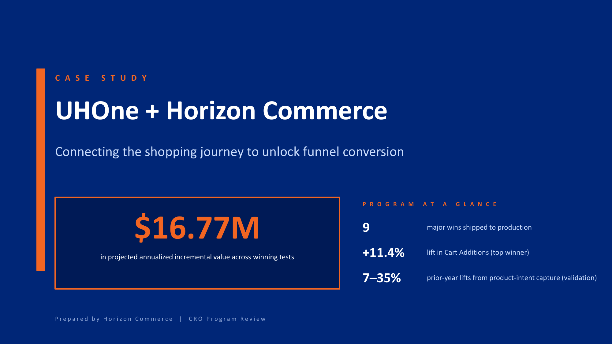
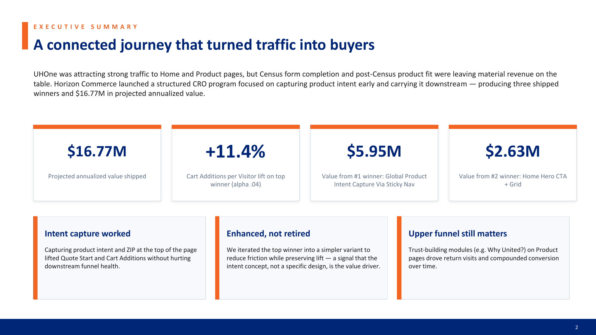
UHOne was attracting strong traffic to Home and Product pages, but Census form completion and post-Census product fit were leaving material revenue on the table. A structured CRO program focused on capturing product intent early and carrying it downstream produced 3 shipped winners and $16.77M in projected annualized value.
Three principles shaped the program: intent capture worked (lifted Quote Start and Cart Additions without hurting downstream funnel health), enhanced not retired (the top winner was iterated into a simpler variant that preserved the lift), and upper funnel still matters (trust modules on Product pages drove return visits and compounded conversion over time).
UHOne was winning at traffic — and losing at fit.
The goal: improve three KPIs in order — Quote Start Rate (visitors entering the Census funnel), Quote Submit Rate (users completing the Census form), and Cart Additions / Purchase (users adding plans and buying).
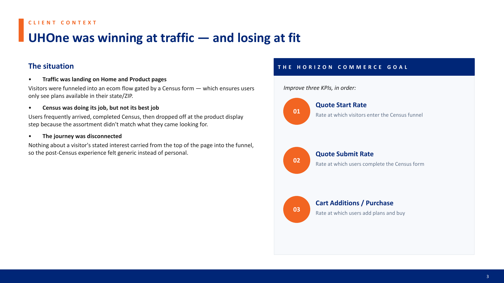
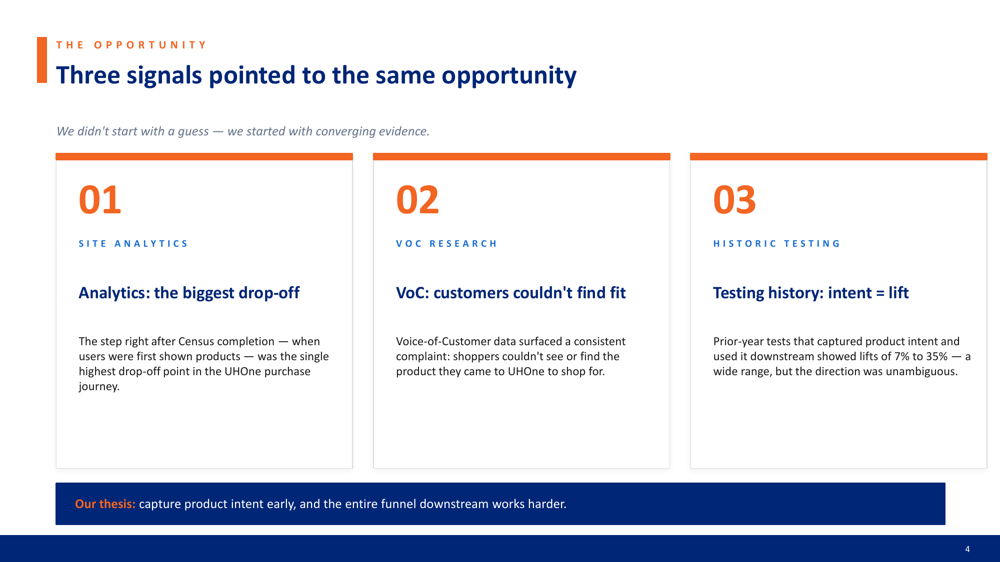
We didn't start with a guess — we started with converging evidence. Three independent signals all pointed at the same opportunity:
The thesis: capture product intent early, and the entire funnel downstream works harder.
A disciplined, evidence-led testing engine — four steps, run as a repeatable cadence rather than a one-time burst:
The result: a repeatable cadence that turns research into shipped code.
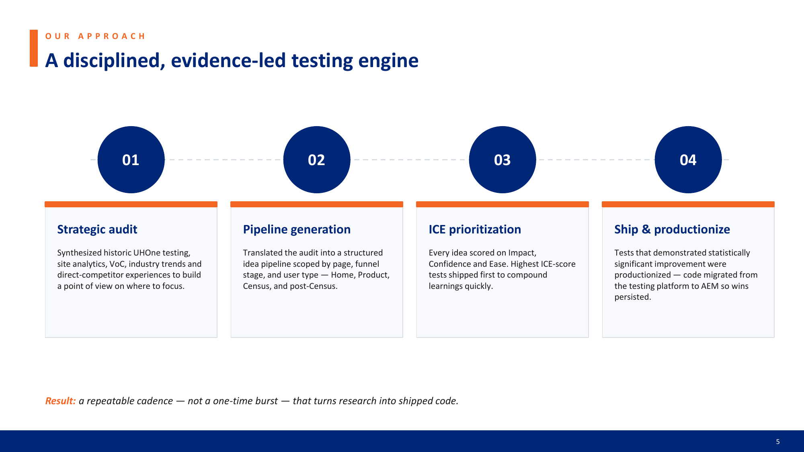
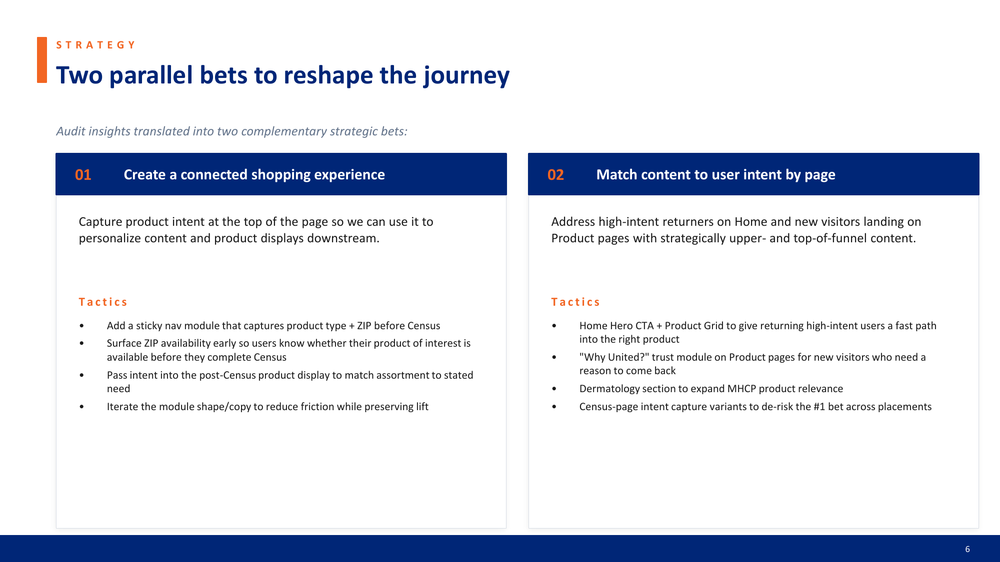
Audit insights translated into two complementary strategic bets, run in parallel:
$16.77M in projected annualized incremental value across the program — ranked by total projected value:
Winners shipped to production are highlighted across the appendix table; the rest remained in the testing platform pending iteration.
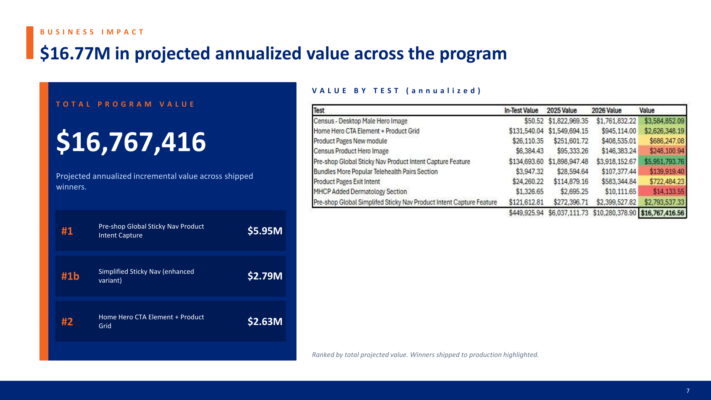
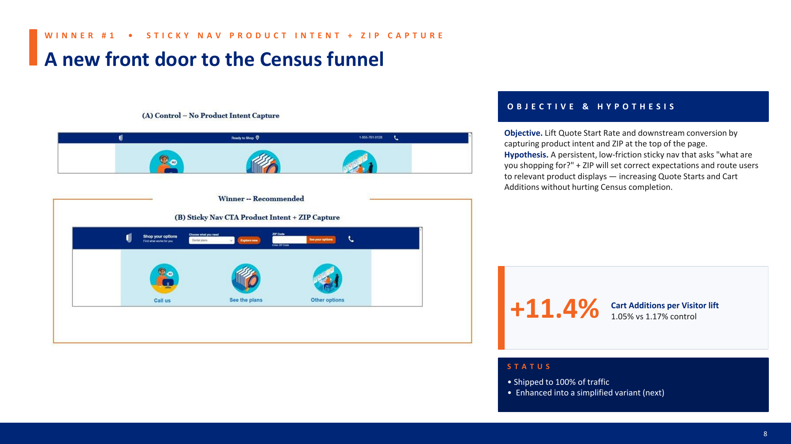
Hypothesis. A persistent, low-friction sticky nav that asks "what are you shopping for?" plus ZIP would set correct expectations and route users to relevant product displays — increasing Quote Starts and Cart Additions without hurting Census completion.
Result. +11.4% Cart Additions per Visitor lift (1.05% control vs 1.17% test, alpha .04). Shipped to 100% of traffic and enhanced into a simplified variant.
Variant B (Intent + ZIP) wins on Quote Start Rate (11.45% vs 10.57%) and Cart Additions (1.17% vs 1.05%). Variant C (Intent only, no ZIP) also lifts Cart Additions — showing product intent alone is valuable, but ZIP adds real lift on Quote Starts. Bounce Rate held or improved across both variants — zero guardrail damage.
Why it matters: 4.4% drop in broad Census visits on Variant B (56.97% → 54.46%, statistically significant). Users aren't disappearing — they're being routed into the right Census path (dental, vision, short-term, etc.) the first time. That's the whole thesis in one chart.
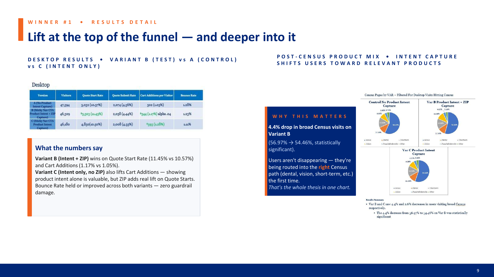
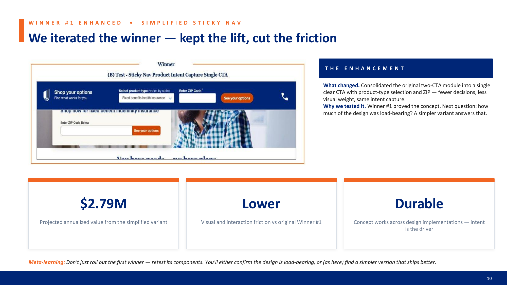
We iterated the winner — kept the lift, cut the friction. Consolidated the original two-CTA module into a single clear CTA with product-type selection and ZIP — fewer decisions, less visual weight, same intent capture.
Meta-learning: don't just roll out the first winner — retest its components. You'll either confirm the design is load-bearing, or (as here) find a simpler version that ships better.
Audience. Returning visitors hitting Home — often high-intent and further along the consideration curve than Product-page entrants.
Hypothesis. Replacing the generic hero with a prominent CTA + a product grid of the full UHOne portfolio would raise Quote Starts for returning users and reduce bounce for new users who needed a product-level orientation.
Result. $2.63M projected annualized incremental value. The grid reduced the cognitive cost of "which UHOne product do I need?" — a question the control forced users to answer implicitly. Even a traffic-hungry Home page benefits from more product-first signal, especially for audiences past initial consideration.
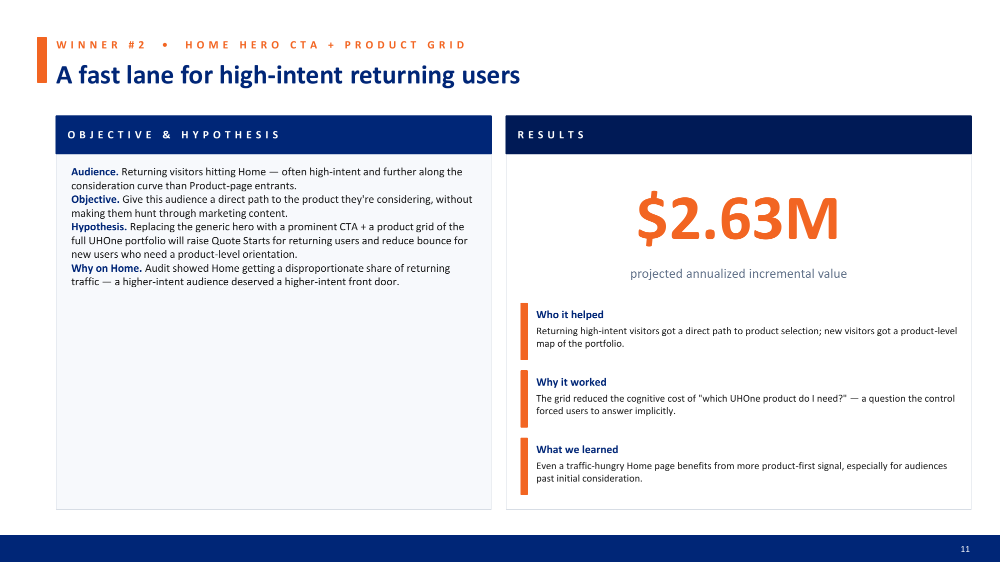
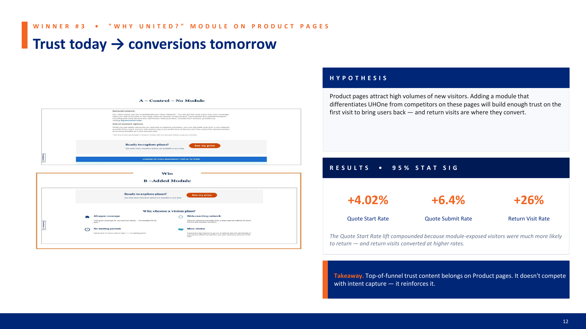
Hypothesis. Product pages attract high volumes of new visitors. Adding a module that differentiates UHOne from competitors on these pages would build enough trust on the first visit to bring users back — and return visits are where they convert.
Results (95% stat sig):
The Quote Start Rate lift compounded because module-exposed visitors were much more likely to return — and return visits converted at higher rates.
Takeaway. Top-of-funnel trust content belongs on Product pages. It doesn't compete with intent capture — it reinforces it.
Six learnings travel from this program to the next:
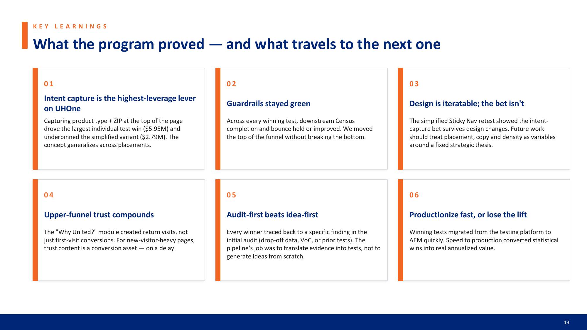
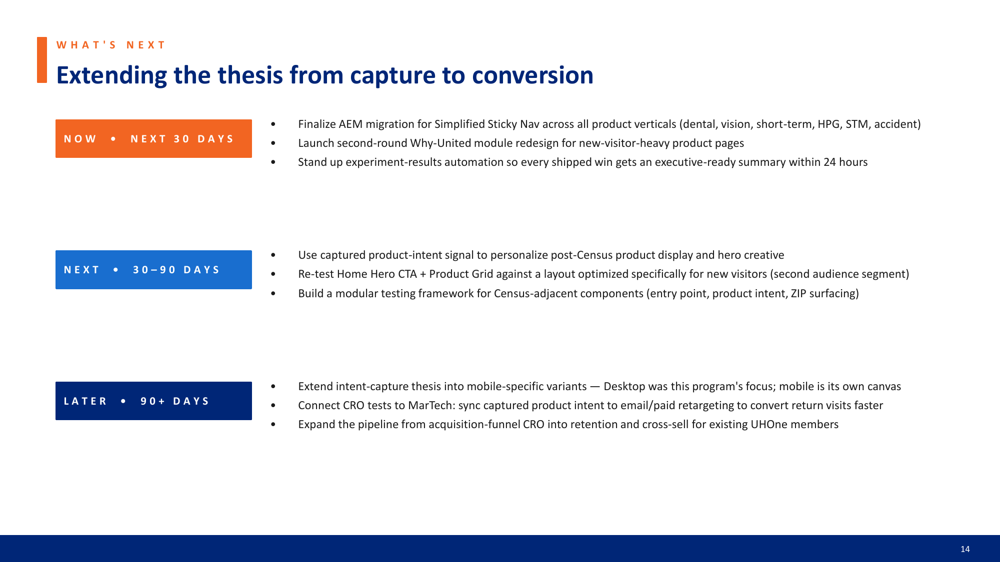
Extending the thesis from capture to conversion across three time horizons:
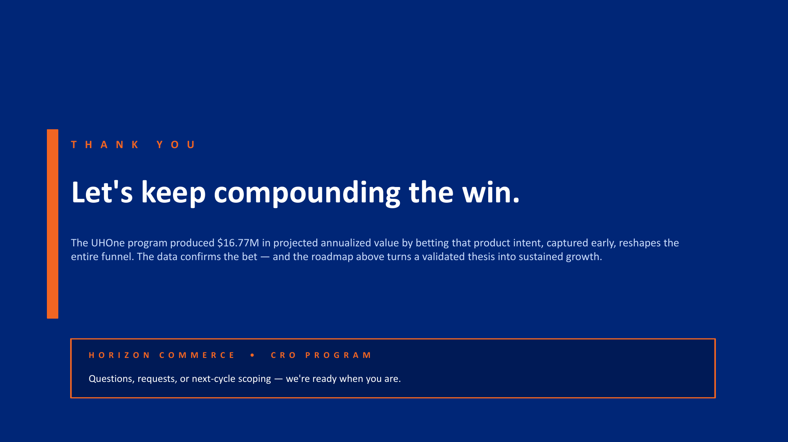
Book a free 30-minute strategy call — directly on my calendar.
Schedule a call